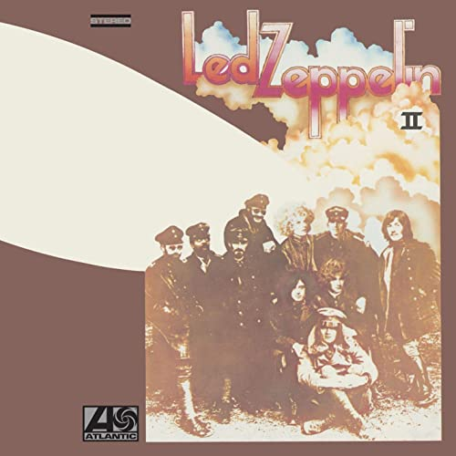
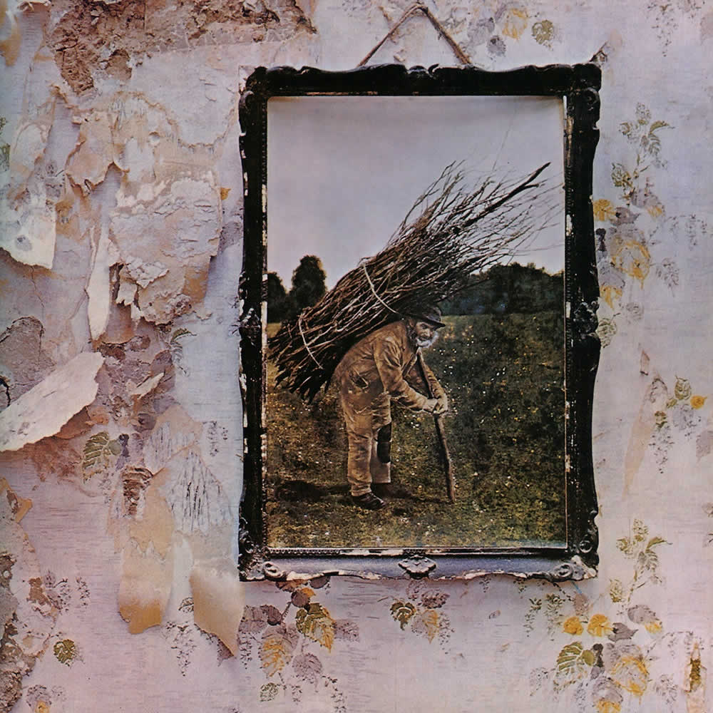

About
In 1968, the English rock group Led Zeppelin was established in London. Drummer John Bonham, bassist John Paul Jones, guitarist Jimmy Page, and vocalist Robert Plant made up the band. Although they drew from a range of inspirations, including blues and folk music, their style is credited as one of the forerunners of hard rock and heavy metal because of its loud, guitar-driven sound. Led Zeppelin have been acknowledged as having a considerable influence on the nature of the music business, especially in the creation of stadium rock and album-oriented rock (AOR).
Led Zeppelin, once known as the New Yardbirds, acquired a contract with Atlantic Records that allowed them a great level of creative flexibility. They were initially despised by critics, but with eight studio albums released over 10 years, they experienced great financial success. Led Zeppelin, their debut album from 1969, reached the top ten in a number of countries and included songs like "Good Times Bad Times," "Dazed and Confused," and "Communication Breakdown." Their first number-one album, Led Zeppelin II (1969), produced "Whole Lotta Love" and "Ramble On" for them. "Immigrant Song" was included on Led Zeppelin III, which was released in 1970. Led Zeppelin IV (1971), their untitled fourth album, is one of the best-selling albums in history and has sold 37 million copies. The songs "Stairway to Heaven," "Black Dog," and "Rock and Roll" are among the most well-known and influential in rock history. The songs "The Song Remains the Same" and "Over the Hills and Far Away" are from the 1973 film Houses of the Holy. Physical Graffiti (1975), a double album, featured "The Rover" and "Kashmir".
Particularly early in their career, Page composed the majority of Led Zeppelin's music, while Plant composed the majority of their lyrics. Later, Jones' keyboard-based compositions became the foundation of their music, which increasingly experimented.The group developed a reputation for excess and revelry in the latter portion of their career due to a string of record-breaking tours. The band disbanded after Bonham's death in 1980, believing that they would not be "Led Zeppelin" without him, although continuing to be financially and critically successful. Their touring and recording output, which included Presence (1976) and In Through the Out Door (1979), also became more constrained. Since then, the remaining ex-members have occasionally worked together and performed together in special concerts. The Ahmet Ertegun Tribute Concert in 2007, which featured Jason Bonham, the drummer's father, was the most popular of these.
Led Zeppelin is one of the most successful musical acts of all time; it is believed that they have sold between 200 and 300 million records globally. They had five of their albums certified as Diamond in the US, and they had eight straight UK number-one albums as well as six number-one albums on the US Billboard 200. They were referred to be "the biggest band of the Seventies," "the heaviest band of all time," and "unquestionably one of the most enduring bands in rock history" by Rolling Stone magazine. When the band was admitted into the Rock and Roll Hall of Fame in 1995, it was noted that they were "as influential" in the 1970s as the Beatles were in the 1960s, according to the band's biography at the museum. Best Led Zeppelin albums
In 1968, the English rock group Led Zeppelin was established in London. Drummer John Bonham, bassist John Paul Jones, guitarist Jimmy Page, and vocalist Robert Plant made up the band. Although they drew from a range of inspirations, including blues and folk music, their style is credited as one of the forerunners of hard rock and heavy metal because of its loud, guitar-driven sound. Led Zeppelin have been acknowledged as having a considerable influence on the nature of the music business, especially in the creation of stadium rock and album-oriented rock (AOR).
Led Zeppelin, once known as the New Yardbirds, acquired a contract with Atlantic Records that allowed them a great level of creative flexibility. They were initially despised by critics, but with eight studio albums released over 10 years, they experienced great financial success. Led Zeppelin, their debut album from 1969, reached the top ten in a number of countries and included songs like "Good Times Bad Times," "Dazed and Confused," and "Communication Breakdown." Their first number-one album, Led Zeppelin II (1969), produced "Whole Lotta Love" and "Ramble On" for them. "Immigrant Song" was included on Led Zeppelin III, which was released in 1970. Led Zeppelin IV (1971), their untitled fourth album, is one of the best-selling albums in history and has sold 37 million copies. The songs "Stairway to Heaven," "Black Dog," and "Rock and Roll" are among the most well-known and influential in rock history. The songs "The Song Remains the Same" and "Over the Hills and Far Away" are from the 1973 film Houses of the Holy. Physical Graffiti (1975), a double album, featured "The Rover" and "Kashmir".
Particularly early in their career, Page composed the majority of Led Zeppelin's music, while Plant composed the majority of their lyrics. Later, Jones' keyboard-based compositions became the foundation of their music, which increasingly experimented.The group developed a reputation for excess and revelry in the latter portion of their career due to a string of record-breaking tours. The band disbanded after Bonham's death in 1980, believing that they would not be "Led Zeppelin" without him, although continuing to be financially and critically successful. Their touring and recording output, which included Presence (1976) and In Through the Out Door (1979), also became more constrained. Since then, the remaining ex-members have occasionally worked together and performed together in special concerts. The Ahmet Ertegun Tribute Concert in 2007, which featured Jason Bonham, the drummer's father, was the most popular of these.
Led Zeppelin is one of the most successful musical acts of all time; it is believed that they have sold between 200 and 300 million records globally. They had five of their albums certified as Diamond in the US, and they had eight straight UK number-one albums as well as six number-one albums on the US Billboard 200. They were referred to be "the biggest band of the Seventies," "the heaviest band of all time," and "unquestionably one of the most enduring bands in rock history" by Rolling Stone magazine. When the band was admitted into the Rock and Roll Hall of Fame in 1995, it was noted that they were "as influential" in the 1970s as the Beatles were in the 1960s, according to the band's biography at the museum. Best Led Zeppelin albums
-
Led Zeppelin
Led Zeppelin, sometimes referred to as Led Zeppelin I, is the debut studio album by English rock band Led Zeppelin. It was released on 12 January 1969 in the United States and on 31 March in the United Kingdom by Atlantic Records.

Led Zeppelin II
Led Zeppelin II is the second studio album by the English rock band Led Zeppelin, released on 22 October 1969 in the United States and on 31 October 1969 in the United Kingdom by Atlantic Records.

Led Zeppelin III
Led Zeppelin III is the third studio album by the English rock band Led Zeppelin, released on 5 October 1970. It was recorded in three locations. Much of the work was done at Headley Grange, a country house, using the Rolling Stones Mobile Studio.

Led Zeppelin IV
The untitled fourth studio album by the English rock band Led Zeppelin, commonly known as Led Zeppelin IV, was released on 8 November 1971 by Atlantic Records. It was produced by guitarist Jimmy Page and recorded between December 1970 and February 1971, mostly in the country house Headley Grange.
